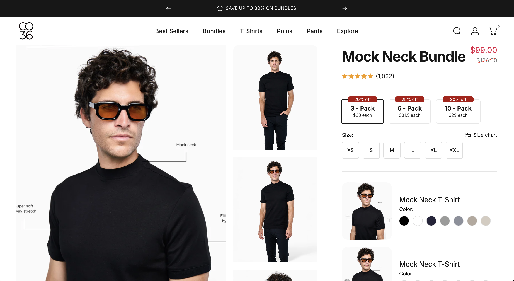

Co.Thirty Six needed a fully custom-designed bundle-building experience on the product page, letting customers assemble multi-item packs entirely on their own terms. The flow was custom designed end-to-end: customers choose a global size first, then pick colors for each item in the pack through a custom color-swatch UI, then select the pack size itself via a custom pack-size selector — with two distinct, custom-designed bundle types supported: one that mixes different products together, and one built from multiple units of the same product.
Native Shopify variants and options aren't built for multi-step, interdependent bundle logic. The client needed a single global size selection to apply across an entire bundle, followed by per-item color choices that update dynamically based on the selected pack size, and the whole flow needed to support two structurally different bundle types — mixed-product bundles and same-product multi-packs — within one coherent PDP experience, without relying on a paid bundle app.
Built a fully custom product-page configurator in Liquid and JavaScript that walks the customer through global size selection, then per-item color pickers scoped to the chosen pack size, then final pack-size confirmation. Implemented two bundle variants on the same underlying system: a 'different products' bundle type and a 'same product, multiple units' bundle type, each reusing the core selection logic while branching on how items are presented and validated. Each finished selection is packaged for handoff to checkout, where a separate Cart Transform Function and Checkout Validation Function (a related but distinct project) expand and validate the bundle before purchase.